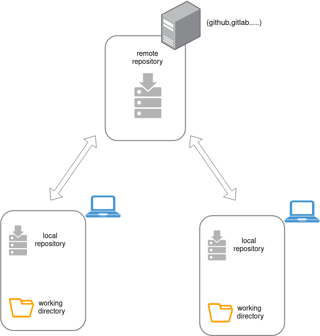
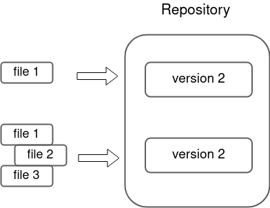
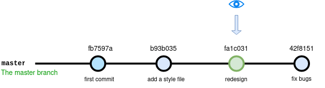
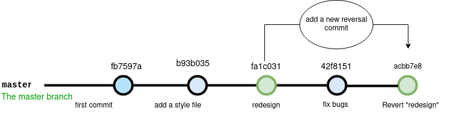
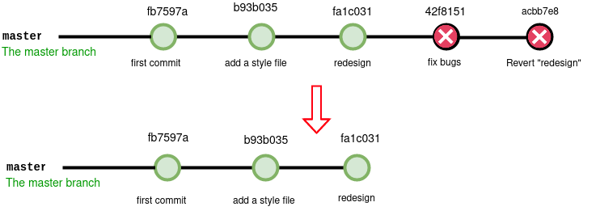
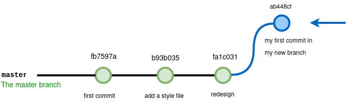
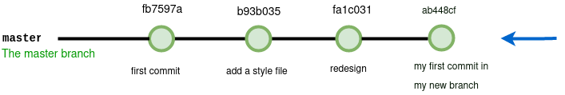

Git Session
In this session, I will give you a tour of the important functions of Git. This tool allows you to do versioning and to keep track of the project modifications
Explore the docs »
Table of Contents
Git Definition
Git is an open-source Distributed version control systems used for tracking project changes and revisions across different teams.

Git saves different versions of projects in a folder known as a Git repository.
what is git repository
A Git repository is a virtual storage of your project. It allows you to save versions of your code, which you can access when needed.

Git architecture
A . Getting Started
A.1 Iinit
The git init command allows to initialize a new empty git repository. This will create a .git folder which will contain the information about our versioning.
cd my-project
git init
A.2 config
Before starting to do anything it is important to configure git. By we will have to configure the information about us. This information will be visible in the history and will allow to know later who did what.
git config --global user.name "My_Name" git config --global user.email "my@email.com" . .
A.3 status
git status
this command allows to get a status on the state of our history,
B. Versioning
B.1 git add
git add <file-name> //add file name to the staging area git add --all //add all the files to the staging area
A particularity of git is its staging system which allows you to select the files to follow during the next commit. You can think of it as a "waiting area" where you list the files you want to be saved.
B.2 git commit
git commit -m "message to describe your commit"
make a commit
A commit is a step in the history of your project, a step that we can identify with a particular message.
B.3 git log
git log
The log command allows us to obtain information on the different commits of our project.
git log --oneline
allows to display the history with one line per commit
example
git log --oneline
42f8151 fix bugs
fa1c031 redesign
b93b035 add a style file
fb7597a first commit
B.4 git checkout
git checkout <commit-id>
In short you have gone back in time as a viewer. You can see the project as it was at the time of the commit while having the ability to return to the "present". We use this command to watch old commits,
exemple
git checkout fa1c031
return:
Note: switching to 'fa1c031'.
You are in 'detached HEAD' state. You can look around, make experimental
changes and commit them, and you can discard any commits you make in this
state without impacting any branches by switching back to a branch.

git checkout master //if you want to go back to the actual state
B.5 git revert
git revert <commit-id>
This command will undo what was done at the time of the commit by creating a new commit. This does not alter the history but will add a new reversal commit
example:
git revert fa1c031
result:
Removing filee.txt
[master acbb7e8] Revert "redesign"
1 file changed, 0 insertions(+), 0 deletions(-)
delete mode 100644 filee.txt
the file that i was added in the "redesign commmit" will be removed and a new commit will be created

B.6 git reset
$ git reset
Deletes all files from the staging area, without deleting the changes.
$ git reset <commit-id>
- allows you to go back to the commit,
- resets the staging area while leaving your working folder as is. The history will be lost (subsequent
commits will be lost, but not your changes).
This command mostly allows you to clean up the history by resubmitting a single commit instead of too many scattered commits.
example :
git reset fa1c031

$ git reset <commit-id> --hard
- Returns to the 'commit-id'
- resets the staging area and working folder to match.
All changes, as well as any commits made after the 'commit-id' will be deleted.
Use with extreme caution
C. Branches
A branch in Git is a way to keep developing and coding a new feature or modification to the software and still not affecting the main part of the project. We can also say that branches create another line of development in the project. The primary or default branch in Git is the master branch
C.1 git branch
git branch # Allows you to list the branches git branch branch_name # Allows you to create a new branche branch_name git branch -m branch_name # rename the current branch to branch_name git branch -d branch_name # delete a branch
The branch command allows you to manage everything related to branches (adding, listing, removing, renaming)
C.2 git checkout
git checkout branch_name
Allows you to go to an existing branch.
example:
git branch my_first_branch #create my new branch git checkout my_first_branch #switch to my new branch git add . git commit -m "my first commit in my new branch" #add a commit in this branch
result:
Switched to branch 'my-first-branch'

C.3 git merge
git merge branch_name
Merge allows you to connect two branches together and fuse them.
The fusion of two branches is always done from the main branch.
example:
git chekout master # we must switch to the main brach git merge my-new-branch
